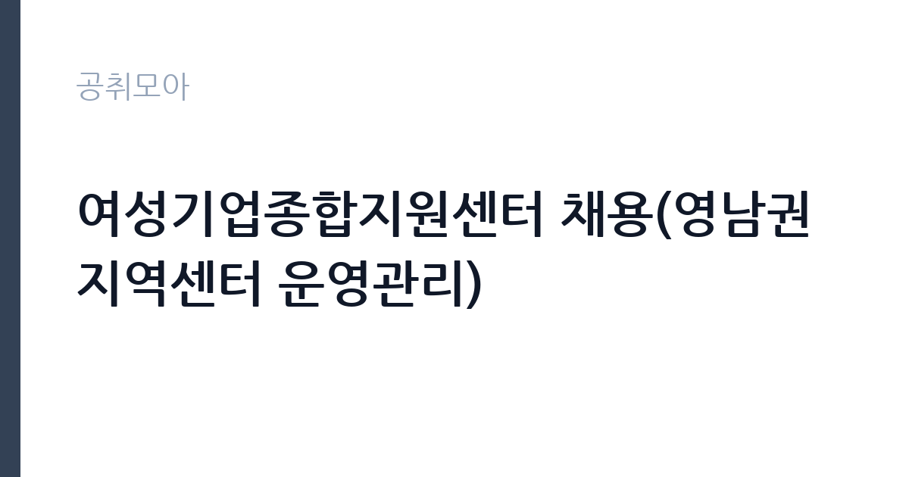

[공공기관] 여성기업종합지원센터 채용(영남권 지역센터 운영관리)
여성기업종합지원센터 · 경북 · 마감 2026-11-03 (D-15) · 출처 나라일터

한눈에 보는 모집 조건
| 기관 | 여성기업종합지원센터 |
|---|---|
| 공고명 | 여성기업종합지원센터 채용(영남권 지역센터 운영관리) |
| 고용형태 | 정규직 |
| 근무지 | 경북 |
| 게시일 | 2026-10-19 |
| 마감일 | 2026-11-03 (D-15) |
지원자격, 이렇게 읽으세요
- 대리(정규직) 1명
- 접수 ~2026-11-03 마감
- 세부 조건은 원문 공고문 확인
이 공고는 채용분야와 직급이 명확합니다. 영남권 지역센터 운영관리 업무를 맡을 대리 1명을 정규직으로 뽑습니다. 근무지는 경북 구미의 경북센터입니다. 선발 절차는 서류접수, 서류전형, 면접전형, 경력조회, 최종임용 순으로 공고문에 명시돼 있습니다. 여기서 눈여겨볼 부분은 경력조회 단계입니다. 단순 신원 확인이 아니라 이전 근무지의 경력과 평판을 확인하는 절차이므로, 이력서에 적은 경력은 모두 증명 가능해야 합니다. 응시자격의 세부 기준, 즉 학력과 경력 연수, 우대사항은 첨부 공고문에 있으니 원문을 직접 확인하셔야 합니다. 접수는 채용 사이트 wesc.applyin.co.kr에서 온라인으로만 이뤄지고, 마감 시각이 자정이라는 점도 주의하십시오.
이 공고의 포인트
이 공고의 매력은 세 가지입니다. 첫째, 정규직 대리 직급입니다. 공공기관에서 경력직으로 정규직에 들어가는 자리는 신입 공채보다 문이 좁지만, 한 번 들어가면 정년까지 근무할 수 있습니다. 둘째, 지역센터 운영관리라는 직무입니다. 본부의 정책을 지역 현장에서 집행하는 역할이라, 기업 지원 실무를 폭넓게 경험할 수 있습니다. 셋째, 근무지가 구미라는 점입니다. 수도권 공고에 몰린 지원자에게는 경쟁 부담이 상대적으로 낮습니다. 여성기업 지원이라는 기관의 정체성에 관심이 있거나, 지역에서 기업 지원 업무를 이어가고 싶은 지원자에게 맞는 자리입니다.
전형은 어떻게 진행되나
절차는 서류접수, 서류전형, 면접전형, 경력조회, 최종임용의 5단계입니다. 서류전형에서는 응시자격과 경력의 직무 연관성을 봅니다. 면접전형에서는 지역센터 운영에 필요한 실무 능력과 조직 적응력을 확인합니다. 경력조회는 최종 단계에 가까워서, 앞선 전형을 통과해도 경력 기재에 문제가 있으면 임용이 취소될 수 있습니다. 접수 기간은 10월 19일부터 11월 3일 자정까지 16일간입니다. 온라인 접수 마감이 자정이므로, 마감일 저녁에 몰리면 접속이 지연될 수 있습니다. 최소 하루 전에 제출을 마치십시오.
원문에서 확인한 전형 방식
○ 채용분야/직급 및 인원(형태)/근무지 * 영남권 지역센터 운영관리 / 대리 1명(정규직) / 경북 구미(경북센터) ○ 임용시기 * 2026년 12월 7일(월) 예정 ○ 접수기간 * 2026.10.19.(월)~2026.11.3(화) 24:00, 16일간 ○ 선발방법 * 서류접수 > 서류전형 > 면접전형 > 경력조회 > 최종임용 ○ 담당부서(연락처) * (재)여성기업종합지원센터 전략기획팀 인사담당자(02-369-0944, kimyongho@wbiz.or.kr) ○ 채용 관련 세부사항은 첨부된 채용공고문을 필히 확인하시고 채용사이트를 통해 원서접수 하시기 바랍니다. * 채용사이트 : https://wesc.applyin.co.kr/
이런 분께 추천해요
- 경북 구미에서 근무할 수 있는 분 — 경북센터 소재지입니다
- 기업 지원·지역 사업 운영 경력이 있는 분 — 대리 직급 경력직입니다
- 정규직으로 지역에서 장기 근무를 원하는 분 — 정년까지 근무 가능한 직위입니다
지원 전 체크리스트
- 첨부 공고문의 학력·경력 요건을 직접 확인했는가 — 본문에는 요약만 있습니다
- 이력서의 경력이 모두 증명 가능한가 — 경력조회 단계가 있습니다
- 임용예정일 2026-12-07부터 근무가 가능한가
- 마감이 2026-11-03 자정이라는 점을 반영해 하루 전 제출했는가
모집 일정과 제출 타이밍
마감은 2026년 11월 3일 자정입니다. 접수 기간이 16일로 길지만, 경력 증명서와 재직증명서를 준비하는 데 시간이 걸립니다. 권장 일정은 첫 주에 공고문을 정독하고 지원 가능 여부를 판단하는 것입니다. 둘째 주에는 자기소개서와 직무기술서를 작성하고, 셋째 주 초에 증빙서류를 발급받아 접수하십시오. 임용예정일이 12월 7일이므로 최종합격 후에는 이전 직장 인수인계 일정을 조정해야 합니다. 경력조회 기간을 감안해 퇴사 일정을 여유 있게 잡으십시오.
직무 이해하기: 공공기관
여성기업종합지원센터는 여성기업의 창업과 성장을 지원하는 기관으로, 본부와 권역별 지역센터를 운영합니다. 영남권 지역센터 운영관리 담당은 경북센터의 사업 운영 전반을 맡습니다. 구체적으로는 지역 여성기업 대상 지원 사업 기획과 운영, 교육·상담 프로그램 진행, 참여 기업 모집과 관리, 사업 성과 정리, 예산 집행 관리 등이 핵심입니다. 본부의 사업 지침을 지역 실정에 맞게 실행하는 역할이므로, 기획력과 현장 대응력을 함께 요구받습니다. 지방자치단체와 유관기관 협업이 잦아 대외 소통 능력도 중요합니다. 소규모 센터에서는 인원이 적어 한 사람이 여러 업무를 겸하는 경우가 많습니다.
자기소개서 작성 팁
경력직 자기소개서의 핵심은 직무 연관성입니다. 첫 문단에 지원 직무와 본인의 경력을 한 문장으로 연결하십시오. 본론은 세 덩어리로 구성합니다. 첫째, 지역 사업 운영 경험. 둘째, 기업 지원이나 교육 프로그램 운영 경험. 셋째, 예산과 성과 관리 경험입니다. 각 경험에는 규모를 붙이십시오. 몇 개 기업을 대상으로, 몇 회의 프로그램을, 어떤 예산 규모로 운영했는지가 드러나야 합니다. 마무리에는 영남권 지역센터에서 만들어보고 싶은 사업 아이디어를 하나 제안하십시오. 경력조회를 하는 기관이므로 재직 기간과 직책을 정확히 쓰는 것이 기본입니다. 과장된 직책명은 역효과를 냅니다.
면접 준비 포인트
면접은 실무 면접 성격이 강합니다. 지역센터 운영에서 가장 어려운 점이 무엇이라고 생각하는지, 참여 기업을 어떻게 모집할지, 사업 성과를 어떤 지표로 측정할지 같은 질문이 나옵니다. 답할 때는 구체적인 실행안을 제시하십시오. 예를 들어 지역 상공회의소나 여성기업 협의체와 협력해 모집 채널을 넓히겠다는 식입니다. 또한 본부와 지역센터 사이의 의사소통 방식에 대한 질문도 예상됩니다. 보고 체계와 현장 판단의 균형을 어떻게 잡을지 정리해 가십시오. 마지막으로 구미에서의 거주 계획을 물을 수 있으니, 근무 지속성에 대한 확신을 보여주는 답변이 좋습니다.
급여·근무조건 읽는 법
보수는 기관의 직급별 보수 규정에 따라 정해지며, 원문 공고문의 처우 항목에 제시됩니다. 이번 공고에서는 연봉 수치가 공개되지 않았으므로 구체적인 금액은 원문에서 확인하셔야 합니다. 대리 직급은 경력에 따라 호봉이 정해지고, 여기에 각종 수당과 성과급이 붙는 구조가 일반적입니다. 정규직이므로 4대 보험과 퇴직급여가 적용되고, 정년까지 근무가 가능합니다. 지역센터 근무의 경우 본부 근무와 처우가 같은지, 전보 가능성이 있는지는 반드시 확인할 항목입니다. 면접 단계에서 근무지 이동 가능 여부를 질문하면 미리 파악할 수 있습니다.
자주 묻는 질문
- 정규직인가요?
네. 공고에 대리 1명(정규직)으로 명시돼 있고, 임용 예정일은 2026년 12월 7일입니다. - 근무지는 어디인가요?
경북 구미의 경북센터입니다. 영남권 지역센터 운영관리 직무로, 본부가 아닌 지역센터 근무입니다. - 경력조회는 어떤 절차인가요?
서류와 면접을 통과한 뒤 이전 근무지의 재직 기간과 직무를 확인하는 단계입니다. 이력서에 적은 경력은 모두 증명 가능해야 합니다.
함께 보면 좋은 공고
[공공기관] 2026년 하반기 중소벤처기업진흥공단 체험형 청년인턴(일반) 채용 공고 — 마감 2026-11-03[공공기관] 2026년 제3차 동남권원자력의학원 직원채용 공고 — 마감 2026-11-02[공공기관] 2026년 한국잡월드 정규직 신입(5급) 직원 채용 공고 — 마감 2026-11-04출처: 나라일터 공개정보를 바탕으로 공취모아가 정리한 안내글입니다. 모집 조건·일정은 변경될 수 있으니 지원 전 반드시 원문 공고문을 확인하세요. 본 글은 정보 제공용이며 합격을 보장하지 않습니다.